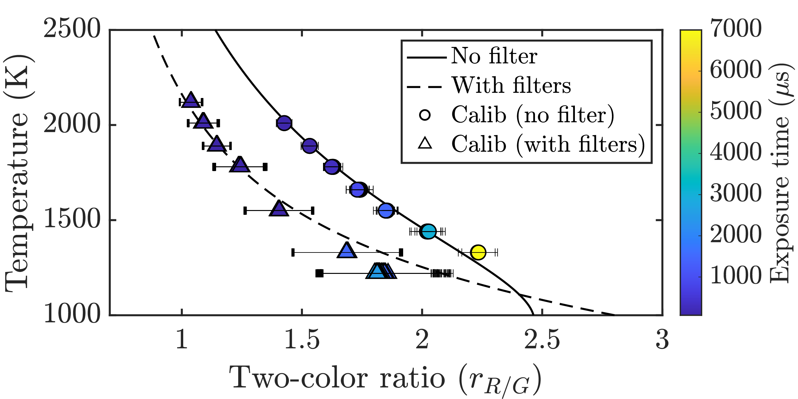

Overview
This work focuses on building reliable calibration and imaging workflows for thermal measurements in metal additive manufacturing and welding environments. The project combines experimental setup design, camera characterization, signal processing, and validation methods to improve confidence in measured temperatures and image-based metrics.
The broader goal is to make high-speed thermal imaging more usable for extracting physically meaningful data such as temperature trends, cooling behavior, melt pool geometry, and signal ratios across visible and near-infrared channels.
What this included
- Dual-sensor visible + NIR camera processing workflows
- Camera response and exposure studies
- Tungsten-filament and reference-source calibration methods
- Signal-ratio analysis for temperature-sensitive channels
- ROI-based image extraction and frame processing
- Validation of measurement consistency under changing optical conditions
General workflow
- Acquire raw image data from visible and/or NIR channels.
- Convert sensor output into usable channel-separated image arrays.
- Select regions of interest for calibration or experimental analysis.
- Measure channel intensities under controlled thermal conditions.
- Build calibration relationships between signal, ratio, and temperature.
- Apply the calibrated workflow to experimental weld or AM images.
- Evaluate uncertainty, repeatability, and sensitivity to optics or exposure settings.
Core ideas
A major challenge in thermal imaging is that measured pixel intensity depends not only on temperature, but also on spectral sensitivity, exposure time, optics, and material emissivity. Calibration workflows help separate those effects and build a more trustworthy relationship between measured signal and actual thermal behavior.
For dual-sensor and multi-channel systems, signal ratios such as visible-to-NIR or red-to-green can also be used to improve robustness and reduce sensitivity to some experimental uncertainties.
Representative equations
Planck-based spectral emission
\( E_{\lambda,b}(\lambda,T) =
\frac{c_1}{\lambda^5\left[\exp\left(\frac{c_2}{\lambda T}\right)-1\right]} \)
Measured channel signal
\( S_i(T_i,\Delta t) =
C_i \Delta t \int_{\lambda}
E_{\lambda,b}(\lambda,T_i)\,
w_i(\lambda)\,
\tau(\lambda)\,
\epsilon_i(\lambda,T_i)\, d\lambda \)
Signal ratio example
\( r_{1/2}(T_i)=\frac{S_{i,1}}{S_{i,2}} \)
In practice, these relationships are used to connect measured image intensity or channel ratios to known thermal reference conditions, then applied to experimental datasets.
Tools and methods
- MATLAB and Python for image processing and calibration analysis
- Visible and near-infrared channel extraction
- ROI-based intensity tracking
- Temperature-dependent ratio analysis
- Experimental optical setup design
- High-speed thermal imaging in welding environments
Figures



Outcome
These workflows helped establish a repeatable path from raw camera data to calibrated thermal metrics. They also supported later work in two-color thermography, dual-sensor imaging, and automated analysis of additive manufacturing experiments.
My role
I designed and implemented calibration workflows, processed imaging datasets, evaluated signal behavior across camera channels, and connected the measurements back to high-temperature manufacturing experiments.